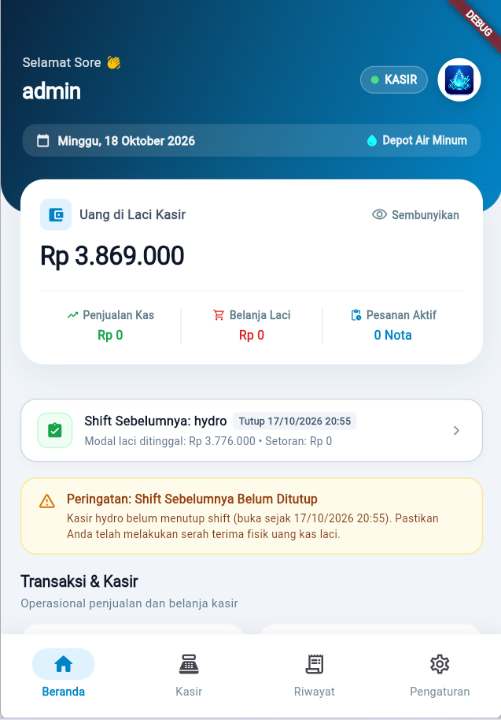
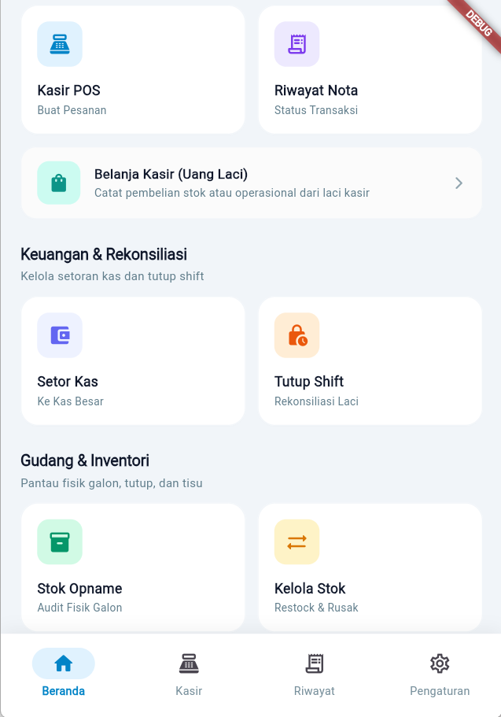
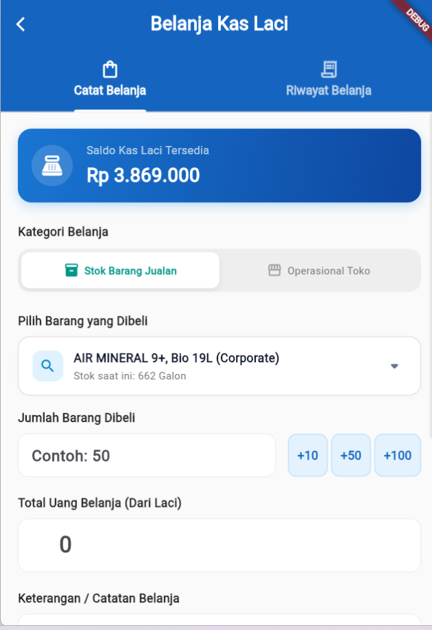
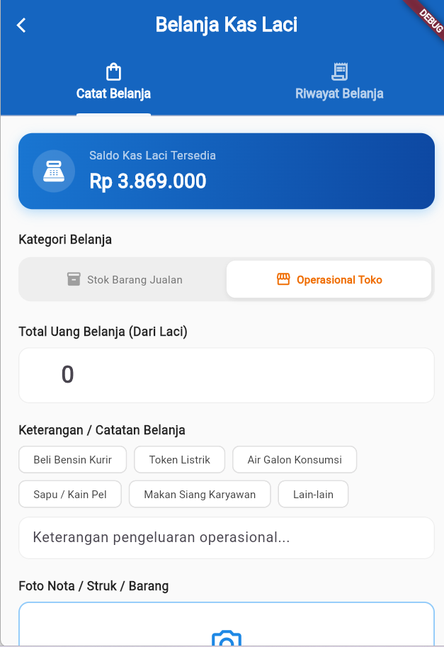
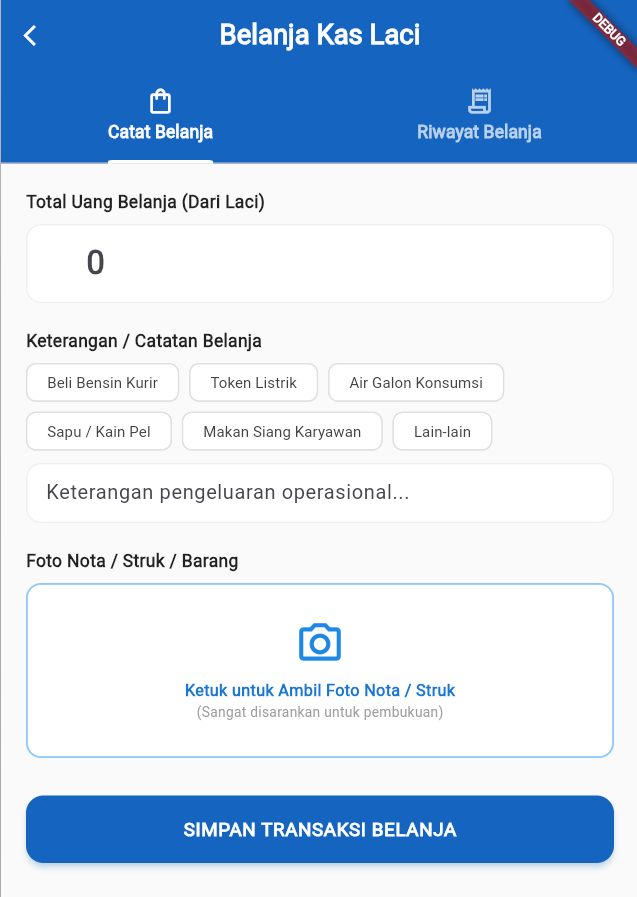

HydroExpert Management System
BUKU PANDUAN OPERASIONAL
(SOP & USER MANUAL)
Panduan Praktis Penggunaan Aplikasi untuk Kasir, Kurir, dan Owner
1. KASIR
Buka shift, transaksi POS, belanja laci, setor kas & tutup shift.
2. KURIR
Ambil pesanan siap, navigasi Maps & upload bukti serah terima.
3. OWNER
Monitoring omzet, saldo kas riil, approval & audit jurnal umum.
Prinsip Standar Baru Keuangan HydroExpert:
- Dual Cash Standard: Saldo Kas Laci Kasir dan Saldo Kas Besar Owner terpisah tegas.
- Omzet Bersih: Hanya pesanan berstatus Selesai (COMPLETE) yang sah dihitung sebagai omzet.
- Bukti Transparan: Setiap belanja kasir, setoran kasir, dan pengantaran kurir wajib dilengkapi foto bukti fisik.
Dokumen Resmi • HydroExpert Depot Air Minum • Edisi 2026
BAB 1: PANDUAN OPERASIONAL KASIR
Kasir bertanggung jawab penuh terhadap operasional penjualan di toko/depot, fisik uang di laci kasir, dan penyiapan galon pesanan pelanggan.
1.1 Tampilan Beranda & Menu Utama Kasir
Begitu staf login ke aplikasi Android kasir, sistem langsung memuat saldo kas fisik riil yang ada di laci kasir dan menu operasional cepat:

1. Layar Beranda Kasir
Uang Fisik Laci (Rp 3.869.000), Status Shift & Omzet Shift

2. Menu Operasional Lengkap
Kasir POS, Riwayat Nota, Belanja Laci, Setor Kas, Tutup Shift & Stok
Kunci Pemahaman Kas Laci:
Nominal yang tertera pada kartu Uang di Laci Kasir (misal: Rp 3.869.000) mencerminkan seluruh uang lembaran dan koin yang wajib ada secara fisik di dalam kotak laci kasir saat itu.
1.2 Melayani Penjualan (Kasir POS)
- Buka menu Kasir POS dan sentuh produk yang dipesan (contoh: Air RO Isi Ulang atau Galon Baru + Isi).
- Di layar Checkout, ketik nama atau WhatsApp pelanggan (sistem otomatis melengkapi jika pelanggan lama).
- Pilih Tipe Pesanan:
- Ambil Sendiri (SELF_PICKUP): Pembeli bawa sendiri galon ke depot. Status nota langsung COMPLETE.
- Diantar Kurir (DELIVERY): Wajib alamat lengkap & link Google Maps. Status awal nota adalah DRAFT.
- Pilih Metode Bayar:
- TUNAI: Uang langsung menambah saldo kas laci kasir secara otomatis.
- QRIS / TRANSFER: Uang langsung masuk ke Kas Besar Owner (tidak menambah uang laci kasir).
- Klik Proses Pesanan dan struk thermal otomatis tercetak.
- Khusus delivery: setelah galon selesai diisi dan dilap, klik tombol "Tandai Siap" (READY) agar kurir dapat langsung mengambilnya.
1.3 Belanja Menggunakan Kas Laci (Belanja Kasir)
Jika depot membutuhkan belanja mendadak dan kasir mengambil uang dari laci, kasir wajib mencatatnya melalui menu Belanja Kasir agar pembukuan laci tidak minus atau selisih saat tutup shift.

Kategori: Stok Barang Jualan
Pilih Tutup/Tisu/Segel, isi Qty & harga (Otomatis menambah stok)

Kategori: Operasional Toko
Beli Bensin, Token Listrik, Konsumsi, Pulsa & Biaya Lainnya

Upload Struk & Simpan
Wajib potret nota fisik belanja lalu klik tombol Simpan Transaksi
Perbedaan 2 Kategori Belanja di Menu Kasir:
- 1. Stok Barang Jualan: Digunakan saat membeli galon baru, tutup botol, tisu pembersih galon, atau segel galon. Sistem akan otomatis menambah kuantiti stok barang jualan ke inventaris.
- 2. Operasional Toko: Digunakan untuk pengeluaran harian depot non-stok seperti beli bensin motor kurir, isi token listrik depot, air galon tester, sabun pembersih galon, atau konsumsi karyawan.
- Foto Bukti Wajib: Staf wajib menekan tombol "Ambil Foto Nota Belanja" dan memotret bon/struk asli sebelum menekan "Simpan Transaksi Belanja". Saldo laci akan terpotong secara transparan.
1.4 Setor Kas ke Kas Besar / Owner
Jika uang tunai di laci sudah menumpuk banyak (misal melebihi Rp 1.000.000), kasir wajib menyetorkan uang ke brankas/rekening Owner:
- Buka menu Setor Kas di menu utama.
- Ketik nominal uang yang diserahkan ke Owner (misal Rp 2.500.000).
- Potret foto bukti serah terima uang fisik atau bukti transfer.
- Saldo laci kasir otomatis berkurang, dan Kas Besar Owner otomatis bertambah.
1.5 Prosedur Tutup Shift (Saat Selesai Jam Kerja)
Wajib Dilakukan Setiap Mau Pulang:
Jangan meninggalkan depot sebelum melakukan Tutup Shift di aplikasi agar pembukuan kasir hari itu terkunci rapi dan tidak bercampur dengan shift berikutnya.
- Klik menu Tutup Shift.
- Sistem menampilkan rumus:
Target Kas = Modal Awal + Penjualan Tunai - Belanja Kasir - Setoran Kas
- Hitung seluruh uang lembaran dan koin fisik yang nyata ada di laci saat itu.
- Ketik nominal uang fisik tersebut pada kolom Uang Fisik Aktual.
- Tulis catatan singkat jika ada selisih, lalu klik Tutup Shift Sekarang.
BAB 2: PANDUAN OPERASIONAL KURIR
Kurir bertugas mengantarkan galon kepada pelanggan secara tepat waktu, menjaga keselamatan barang, serta memotret bukti penerimaan barang langsung di lokasi.
2.1 Alur Pengantaran Galon (Step-by-Step)
1 Buka Menu Kurir & Pantau Antrean
Masuk ke tab Kurir di HP. Periksa daftar pesanan berstatus READY (pesanan yang sudah selesai diisi dan dibersihkan oleh staf kasir di depot).
2 Ambil Pesanan (Jalan Mengantar)
Pilih pesanan pelanggan yang searah rute jalan, lalu klik tombol "Ambil Pesanan". Status pesanan di sistem seketika berubah menjadi ON_DELIVERY.
3 Buka Navigasi Rute Maps
Sentuh ikon atau link Google Maps pada nota pelanggan. Aplikasi otomatis membuka Google Maps dengan petunjuk arah rute GPS langsung ke pagar rumah pelanggan.
4 Serah Terima & Upload Bukti Foto
Setelah galon diserahkan di rumah pelanggan:
• Buka detail pesanan di aplikasi kurir.
• Klik tombol "Selesai Antar".
• Ambil Foto Bukti Serah Terima (foto galon di depan pintu/diterima pelanggan).
• Status otomatis berubah menjadi COMPLETE.
2.2 Aturan Khusus Pengantaran Kurir
| Kondisi Pengantaran |
Aturan Baku & Solusi di Aplikasi |
| Anti-Batal Saat Jalan |
Pesanan yang sudah berstatus ON_DELIVERY (sedang dibawa kurir di jalan) terkunci dan tidak dapat dibatalkan sepihak oleh kasir, demi keamanan fisik barang dan kurir. |
| Pembayaran COD Tunai |
Jika pesanan bertipe bayar di tempat (COD Cash), kurir menerima uang dari pelanggan dan wajib menyerahkan uang tersebut ke kasir depot setibanya di depot agar kasir memasukkannya ke laci. |
| Pembayaran Non-Tunai |
Tunjukkan barcode QRIS depot yang tertempel di motor atau nota fisik jika pelanggan ingin transfer ke rekening resmi depot. |
BAB 3: PANDUAN OPERASIONAL OWNER
Owner memiliki kontrol dan visibilitas 100% terhadap keuangan depot, memantau omzet sah, saldo kas riil, dan mengaudit laporan tanpa risiko selisih.
3.1 Dashboard Ringkasan Bisnis di HP Owner
| Bagian Kartu |
Arti & Nilai yang Ditampilkan |
| TOTAL OMZET SELESAI |
Total nominal uang dari seluruh pesanan yang sudah sah selesai (COMPLETE) pada periode terpilih (bebas dari pesanan menggantung). |
| Siap / Diantar (Pending) |
Uang pesanan yang sedang disiapkan kasir atau sedang diantar kurir di jalan (belum dihitung sebagai omzet selesai sampai ada foto bukti kurir). |
| Kas Besar (Owner / Bank) |
Saldo uang rekening/brankas utama yang menampung uang setoran kasir dan transaksi digital QRIS/Transfer. |
| Kas Kasir (Uang Laci) |
Saldo uang kertas & koin yang saat ini sedang berada di kotak laci meja kasir depot. |
| Total Uang Kas Riil |
Gabungan total seluruh uang tunai yang dimiliki depot (Kas Besar + Uang Laci Kasir). |
3.2 Membaca Riwayat Transaksi di HP
Pada menu Riwayat Transaksi di HP Owner, setiap mutasi uang ditampilkan dengan warna dan ikon pembeda:
- [HIJAU] Pemasukan: Uang masuk dari nota penjualan air pelanggan.
- [MERAH] Pengeluaran: Biaya belanja kasir (stok galon/tisu maupun operasional harian depot).
- [INDIGO] Setor Kas: Perpindahan uang dari laci kasir ke rekening Owner. Sentuh tombol "Lihat Bukti Foto" untuk memeriksa foto bukti fisik yang diunggah kasir.
3.3 Audit Jurnal Umum & Laporan di Web Filament (Komputer)
- Buka browser komputer di alamat:
https://hydroexpert.my.id/admin
- Menu Jurnal Umum (Buku Kas): Menampilkan linimasa debit-kredit akuntansi yang bersih tanpa duplikasi belanja kasir. Dilengkapi tombol Export CSV untuk pembukuan Excel.
- Menu Ringkasan Harian Pembayaran: Menampilkan pembagian metode bayar pelanggan (berapa persen Tunai, QRIS, Transfer Bank, dan Corporate Tempo).
- WhatsApp Blast: Owner dapat mengirim pesan pengingat tagihan otomatis ke nomor WhatsApp pelanggan untuk pesanan yang belum selesai.
HydroExpert • Sistem Kasir & Manajemen Depot Air Minum Modern • 2026